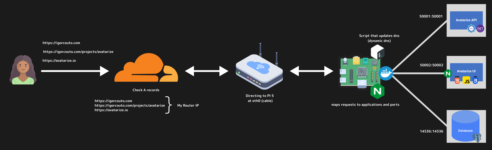
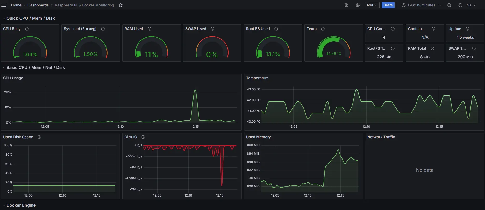

I started putting together a small home server around a Raspberry Pi 5. Part of it was curiosity: I wanted a place where I could learn more about networking, security, deployments, and the boring details that only show up once something is actually running.
Why Bother with a Home Server?
The main reason was control. I wanted somewhere to run my own projects without treating each one as a separate hosting problem. A home server also gives me room to try things, break them, and fix them without worrying too much about the consequences.
I also liked the idea of having a small production-like setup at home. It's not the same as running infrastructure at work, of course, but it's close enough to make the lessons stick.
Why Raspberry Pi 5?
For the hardware, I went with the Raspberry Pi 5. It was small enough for my apartment, cheap enough to experiment with, and powerful enough for the kind of services I wanted to run.
Good Specs:
- 64-bit quad-core ARM Cortex-A76 processor clocked at 2.4 GHz
- VideoCore VII GPU
- 8 GB of LPDDR4X RAM
- PCIe 2.0 (It's possible to force PCI Express Gen 3.0 speeds)
Compact Size: Space matters when you live in an apartment. I don't have a spare corner for a full server, so the Pi sitting next to the router is a big advantage.
Expandable: I added a Pimoroni NVMe Base for SSD storage, a GeekPi Cooler, and a CAT 8 Ethernet cable. CAT 6 would have been fine, but the price difference was tiny, so I just went with the overkill option.
Energy Efficiency: Power usage was another factor. The Raspberry Pi 5 idles at around 2.6W, or about 3.5W with the NVMe base attached, which makes it easy to leave on all the time.
Budget: The full setup came to a little over 200 euros: Raspberry Pi 5 (EUR 89,99), Pimoroni NVMe Base (EUR 19,30), GeekPi Cooler (EUR 15,23), Patriot P300 1TB SSD (EUR 77,21), and an Ethernet cable (EUR 3,94). It wasn't the cheapest possible build, but it felt like a good balance for the size and flexibility.

Getting into Network Configuration and DNS
One of the first jobs was sorting out the network side. I use Cloudflare for DNS, and the server now handles a few of my projects, including igorcouto.com, avatarize.io, activities-api.com, and a few smaller things.
This was the part where the project stopped being theoretical. I had to deal with DNS records, router rules, firewall settings, and a few ARM-specific problems because the Pi runs on aarch64. None of it was especially glamorous, but it was exactly the kind of work I wanted to understand better.
Serving Applications
The Pi runs Nginx in front of the websites, apps, and APIs. The services themselves run in Docker containers, which keeps the setup easier to reason about and makes it less painful to move things around.
I also wired my projects into GitHub Actions. A normal push can build, test, and deploy the latest version to the server without me SSHing into the Pi every time.
It's a simple setup, but that's the point. Docker gives each app a clean boundary, and GitHub Actions handles the repetitive deployment steps.

Observability
For monitoring, I set up Grafana with Prometheus and Loki. I can check network usage, memory, CPU, temperature, and logs from one place. I also added email alerts for the things I actually care about, because dashboards are only useful if I remember to look at them.

Conclusion
This started as a small experiment, but it has become the place where most of my personal projects live. The best part is that it feels understandable: if something breaks, I know where to look, and if I want to change how deployments or monitoring work, I can just try it.